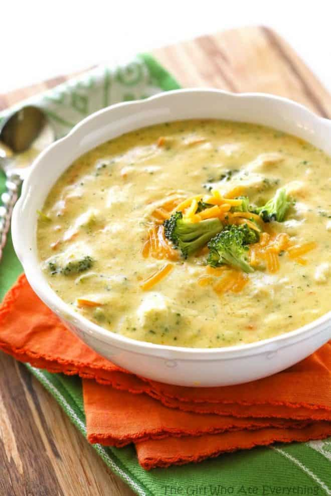
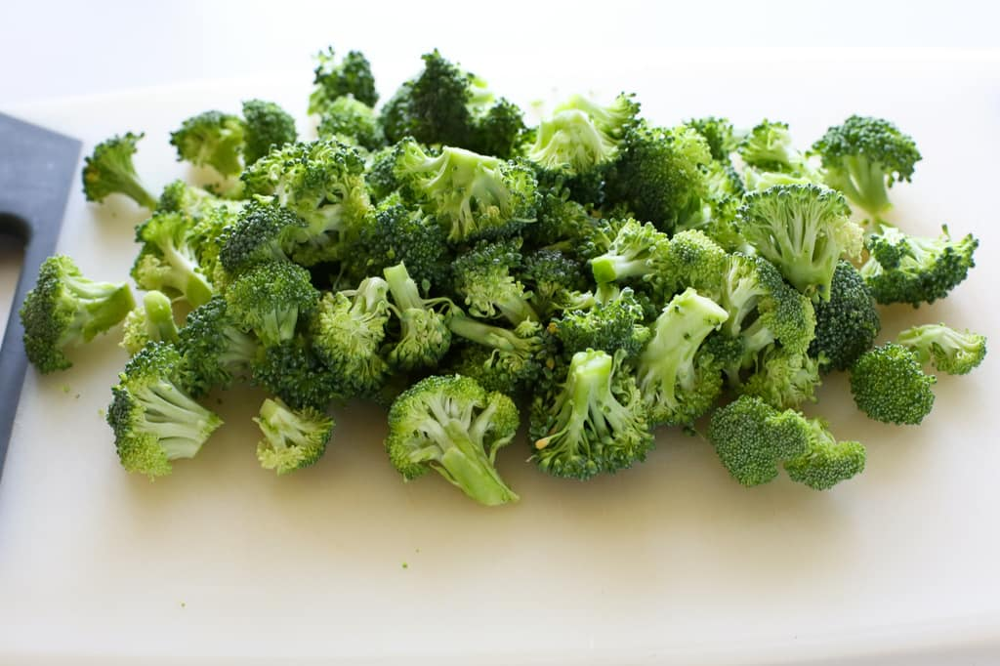
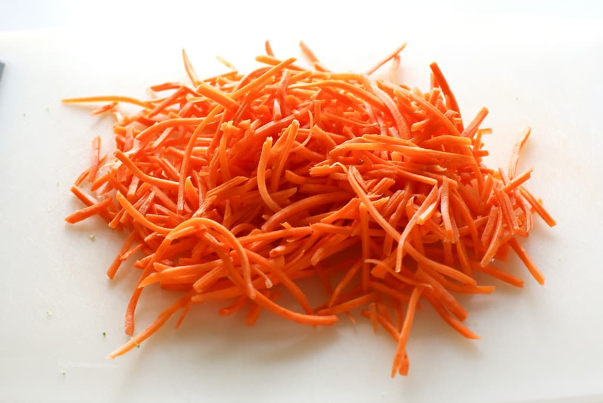

I know this Panera’s Broccoli Cheddar Soup recipe has made the rounds around the blogs but my job is to share recipes that I really love and this is one of them.The reason I know that this recipe tastes just like the delicious Broccoli Cheddar soup at Panera is because I ate this at least once a week during my last pregnancy. It was the ONLY thing that I looked forward to eating and I’m sure the peeps at Panera knew me by name. They serve this Panera’s Broccoli Cheese Soup with a warm crusty baguette. Oh my goodness.
It almost makes me want to get pregnant again. I once was in charge of making soup for 250 women. Guess which soup went first? Nope. Not the chicken noodle. Yes, you guessed it. The Broccoli Cheddar soup. I mean who doesn’t like broccoli and cheese? Not only is it a healthy broccoli cheese soup recipe, it’s only 417 calories a serving.

